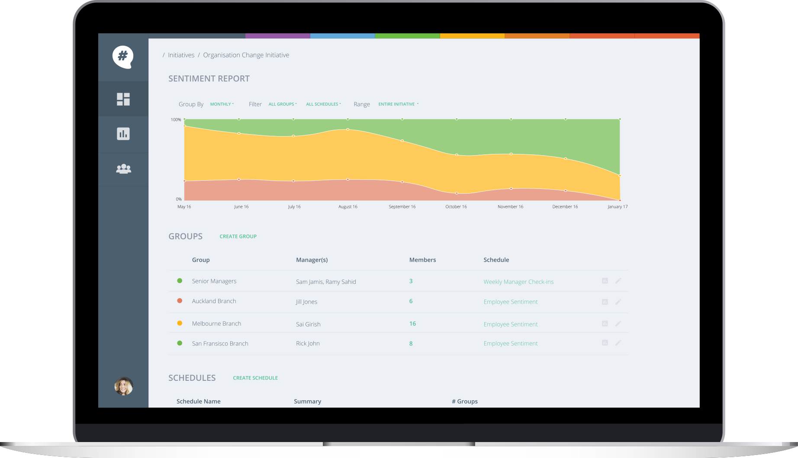
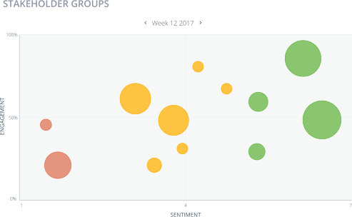

Top 3 features for high-change organisations:
Rapid Pulse Surveys
Let your project & implementation managers customise the questions they need, receive answers within the same day, and quickly target from 20 people to over 20,000.


Realtime Sentiment Analysis
Every employee & stakeholder interaction is securely stored, analysed in realtime and reported as a familiar sentiment metric, which forms a leading early indicator of pushback and resistance risks.
Flexible Segmentation
The entire tool suite, including employee segments, can be created, repurposed and modified as the organisation changes and new initiatives are required, whilst still generating consistant indicator reports and maintaining a single historical source for stakeholder sentiment.
